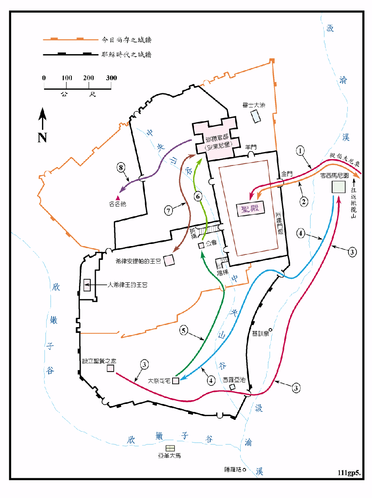
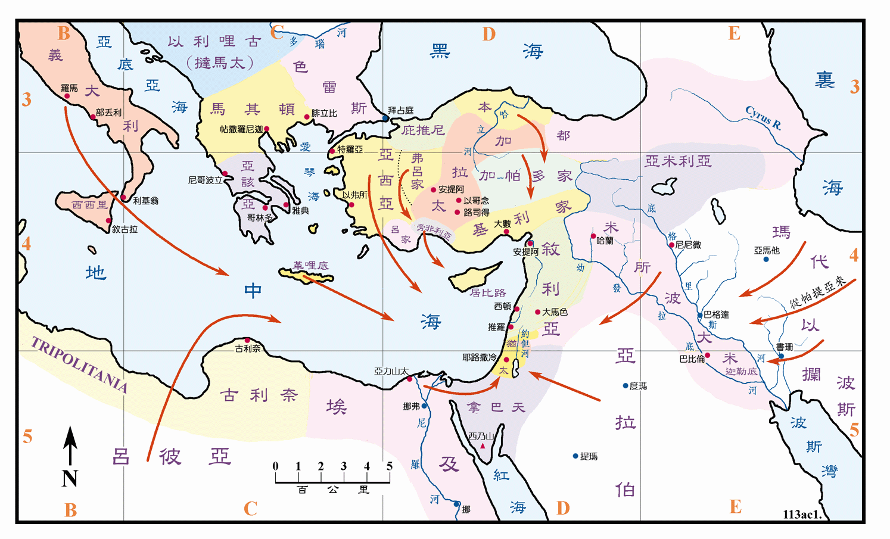

<使徒行传>耶路撒冷初期的教会
主后30至33年
请参看<福图05>

| 圣经 | 说明 |
|---|---|
| 徒1:3-11 | 主耶稣受害之后，用许多的证据将自己活活的显给使徒看，有四十天之久，然后就被取上升，有一朵云彩把他接去。 |
| 徒1:11-26 | 门徒在耶路撒冷城内的一间楼房聚集祈祷，并拣选马提亚作使徒。 |
| 徒2:1-42 | 门徒们在五旬节被圣灵充满，用各种方言说话，彼得讲道后有三千人受洗（从天下各国来的犹太人，请见<徒图01>） |
| 徒2:43-47 | 信徒们都在一起，凡物公用，天天同心合意 切祈祷，主将得救的人天天加给他们。 |
| 徒3:1-4:4 | 彼得在圣殿中治病和传讲复活的道，听道的男丁就有五千人之多，但彼得在当晚被祭司等所捉拿收押。 |
| 徒4:5-22 | 第二天彼得被受到公会受审，但因公会想不出法子刑罚他们，就恐吓了一番，就把他们放了。 |
| 徒5:12-40 | 主藉使徒的手在民间行了许多神迹，又引起大祭司等的忌恨，就将使徒拿在监里，主的使者在夜间开了门，领他们出来，仍在殿里教训人，於是大祭司们又把他们带到公会再度受审，把他们打了，吩咐他们不可奉耶稣的名讲道，就放了他们。 |
| 徒6:5-7:60 | 司提反被拣选，他满得恩惠能力，在民间行了大奇事和神迹，就被拿到公会，司提反当众伸诉后，却被用石头打死。 |
主耶稣升天后，主的门徒就大有能力，大胆的在耶路撒冷传道，虽然是不断的受到逼迫，但是信主的人数增加的很快，甚至有的祭司也信了。信主的人居住在一起，就有了教会的雏形，然而反对的人和公会的逼迫也与日俱增，到司提反被打死时开始，耶路撒冷的教会开始大受逼迫，除了使徒之外，门徒都分散到犹太和撒玛利亚各处传讲福音。
<徒图01>五旬节时犹太人分布各处情形

| 圣经 | 说明 |
|---|---|
| 徒2:5-11 | 门徒用各种的乡谈说话。 |
以色列的十个支派在 722BC 北国覆亡时被掳去亚述地，犹大支派又在605BC、597BC 和 586BC 三次大规模被掳去巴比伦等地。同时也有一批人逃往埃及，日后以色列地动乱不断，犹太人也不断自动或被动的往外移出。主前四世纪末，希腊帝国时又有大批犹太人移到埃及和希腊各地。到63BC 罗马帝国又掳了大量犹太人到罗马本土，因此在新约时代，犹太人是遍布全罗马帝国，甚至在帝国以东的帕提亚、玛代、以拦和波斯等原属希腊帝国的疆域。还有南方的亚拉伯和吕彼亚。而且很明显的，尚未提到的还有很多，诸如埃及、叙利亚、基利家、加拉太、马其顿、亚该亚等等。这些犹太地以外犹太的人口总数，是在犹太本地的人口数倍之多。他们多用希腊语，故称是说希利尼话的犹太人。现今称他们是离散人 (The dispersion)。